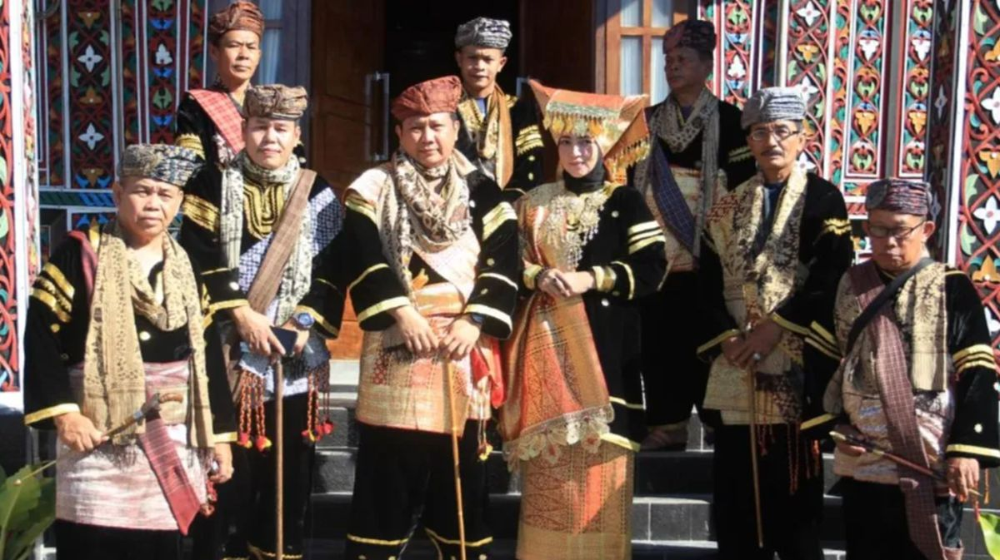

🎭 meKeLoTreng
MENGENAL KERAGAMAN BUDAYA
DAN KEARIFAN LOKAL TRENGGALEK
📚 MATERI PEMBELAJARAN
📜 KEARIFAN LOKAL
Kearifan lokal adalah nilai-nilai luhur yang diwariskan turun-temurun untuk menjaga keseimbangan alam dan kehidupan masyarakat.
Cuci Negeri Soya (Ambon)

Cuci negeri soya setiap tahunnya dilaksanakan masyarakat Ambon pada minggu kedua bulan Desember. Upacara adat ini bertujuan membersihkan negeri secara gotong royong untuk menjalin nilai persatuan dan persaudaraan masyarakat Desa Soya. Kegiatannya meliputi membersihkan lingkungan, rumah ibadah, dan fasilitas umum sebagai wujud syukur dan persiapan menyambut tahun baru.
Tradisi Sasi (Maluku dan Papua)

Tradisi sasi atau dalam istilah lokal artinya larangan yang terdapat di daerah Maluku dan Papua. Tradisi sasi merupakan sebuah larangan untuk memanen atau mengambil sumber daya alam tertentu di wilayah adat selama beberapa waktu. Tradisi ini merupakan larangan memanen untuk jenis-jenis ikan tertentu.Tradisi ini bisa dilakukan di darat maupun di laut. Tradisi ini dilakukan secara turun-temurun oleh masyarakat Maluku dan Papua. Tradisi pun masih dilakukan hingga sekarang. Tradisi dilakukan sebagai upaya untuk menjaga ekosistem dan populasi agar tidak rusak atau habis. Tadisi ini menunjukkan kesadaran masyarakat dalam menjaga kelestarian lingkungan dan keberlanjutan alam.
Tradisi Bebie (Sumatera Selatan)

Bebie merupakan suatu tradisi menanam padi secara bersama-sama. Tujuannya agar suatu proses panen dapat dengan cepat terselesaikan. Apabila panen telah selesai, maka masyarakat akan mengadakan sebuah perayaan. Perayaan ini sebagai bentuk dari rasa syukur atas proses panen yang berhasil dan juga sukses. Tradisi Bebie ini terdapat di Muara Enim, Sumatra Selatan. Tradisi ini memperkuat kebersamaan dan kekeluargaan antar warga.
Tradisi te aro neweak lako (alam adalah aku)- Papua

di Papua, terdapat kepercayaan te aro neweak lako (alam adalah aku). Gunung Erstberg dan Grasberg dipercaya sebagai kepala mama, tanah dianggap sebagai bagian dari hidup manusia. Sehingga pemanfaatan sumber daya alam dilakukan secara hati- hati.
Tradisi Grebeg Besar- Yogyakarta

Tradisi Grebeg besar biasanya dilaksanakan di Masjid Gede Kauman Yogyakarta. Tradisi grebeg besar merupakan rangkaian perayaan Iduladha, Keraton Yogyakarta. Keraton Yogyakarta menyediakan tujuh gunungan berisi hasil bumi sebagai simbol sedekah raja kepada rakyatnya sekaligus wujud rasa syukur kepada Tuhan.
Tradisi Grebeg Selo (Trenggalek)

Grebeg Selo adalah tradisi tahunan di Trenggalek yang dilakukan untuk menghormati leluhur dan memohon keselamatan. Prosesi ini melibatkan arak-arakan budaya, pertunjukan seni, dan doa bersama. Masyarakat membawa berbagai hasil bumi sebagai ungkapan syukur. Tradisi ini menjadi ajang pelestarian budaya lokal dan mempererat persaudaraan. Waktu pelaksanaan: Bulan Selo dalam kalender Jawa, tepatnya pada hari Jumat Legi. Tujuan: Bagian dari upacara bersih desa, yang berfungsi untuk menjaga kebersihan dan kesucian lingkungan serta mempererat hubungan sosial di antara masyarakat. Makna: Merupakan warisan budaya turun-temurun yang memadukan spiritualitas, kesenian, dan sejarah, serta menjadi wadah pelestarian budaya lokal. Kegiatan: Biasanya melibatkan berbagai kegiatan seperti pertunjukan kesenian tradisional, salah satunya adalah macapat, wayang kulit serta upacara adat lainnya.
Tradisi Larung Sembonyo (Pantai Prigi)

Larung Sembonyo adalah upacara adat yang merupakan tradisi nelayan di Pantai Prigi, Trenggalek. Berupa upacara syukur sedekah laut dengan melarung tumpeng raksasa dan sesaji ke tengah laut. Tradisi tahunan ini bertujuan untuk mengucapkan rasa syukur atas hasil laut yang melimpah dan memohon keselamatan saat melaut. Asal usul: Nama "Sembonyo" berasal dari tiruan mempelai dari adonan tepung beras ketan atau batang pisang yang dihias. Prosesi: Persiapan sesaji, termasuk tumpeng raksasa dan aneka hasil bumi. Prosesi arak-arakan tumpeng dan sesaji dari kantor kecamatan menuju pantai. Pelarungan tumpeng dan sesaji ke tengah laut oleh para nelayan, diikuti oleh puluhan perahu lainnya. Makna: Wujud syukur atas hasil laut. Harapan agar nelayan selalu diberikan keselamatan saat melaut. Menjadi daya tarik budaya yang melestarikan kearifan lokal. Tujuan: Menghidupi ekonomi lokal melalui gelaran acara. Menjaga dan melestarikan budaya maritim.
Tradisi Genduren

Genduren adalah tradisi kenduri atau selamatan dalam budaya Jawa. Tradisi ini dilakukan untuk berbagai keperluan seperti syukuran, mengenang orang yang telah meninggal, atau memohon keselamatan. Genduren melibatkan doa bersama dan makan bersama dengan tetangga. Makanan yang disajikan biasanya berupa nasi tumpeng, ingkung ayam, dan berbagai jenis makanan tradisional.
Tradisi Megengan

Megengan adalah tradisi menyambut bulan Ramadan dalam budaya Jawa. Tradisi ini dilakukan dengan membuat berbagai macam makanan untuk dibagikan kepada tetangga dan kerabat. Megengan juga menjadi momen silaturahmi dan mempererat hubungan sosial. Tradisi ini mengajarkan nilai berbagi dan mempersiapkan diri menyambut bulan suci.
Tradisi Kupatan

Kupatan adalah tradisi perayaan setelah Idul Fitri dalam budaya Jawa. Tradisi ini dilakukan pada hari ke-7 setelah Lebaran pertama (1 syawal) dengan membuat ketupat dan berbagai makanan khas. Tradisi ini dari dulu sudah dilaksanakan turun temurun oleh masyarakat Durenan. Namun saat ini di kecamatan lain sudah mulai mengikuti tradisi kupatan sebagai perayaan setelah puasa sunah 6 hari setelah 1 syawal. Dari kata Kupat yang artinya ngaku lepat, memiliki filosofi bahwa di hari kupatan itu kita saling mengakui kesalahan dan saling meminta maaf. Sedangkan bentuik kegiatannya, masyarakat saling berkunjung untuk bersilaturahmi dan bemaaf-maafan sambil berbagi makanan yang salah satunya adalah kupat itu sendiri. Kupatan menjadi simbol kerukunan dan kebersamaan antar umat beragama, karena tradisi tersebut tidak membatasi umat yang beragama islam saja akan tetapi umat beragama yang lain juga boleh bersilaturahmi ke tetangga untuk bermaaf maafan dan makan kupat bersama.
• Ngaku Lepat = Mengakui kesalahan
• Janur = Cahaya hati (jatining nur)
• Anyaman Rumit = Kerumitan kesalahan manusia
• Nasi Putih = Kesucian hati
Tradisi Nyadran

Nyadran adalah tradisi membersihkan makam leluhur menjelang bulan Ramadan. Tradisi ini dilakukan secara gotong royong oleh masyarakat. Setelah membersihkan makam, dilanjutkan dengan doa bersama dan kenduri. Nyadran mengajarkan nilai menghormati leluhur dan menjaga kebersihan tempat pemakaman. Nyadran Trenggalek, atau dikenal sebagai Nyadran Dam Bagong, adalah tradisi tahunan masyarakat Trenggalek yang merupakan bentuk rasa syukur, penghormatan kepada leluhur seperti Ki Ageng Menak Sopal, dan pelestarian kearifan lokal. Inti dari tradisi ini adalah prosesi larung kepala kerbau ke Dam Bagong yang berfungsi sebagai pengatur irigasi, simbol kemakmuran dan keberkahan. Upacara adat ini dilaksanakan pada bulan Selo.
Tradisi Ngitung Batih (Kec. Dongko)

Ngitung batih merupakan tradisi upacara adat di Trenggalek, khususnya Kecamatan Dongko, yang bertujuan menghitung jumlah anggota keluarga (batih) dan mendoakan keselamatan serta keberkahan di tahun baru hijriah. Tradisi ini melibatkan pengumpulan sesaji seperti takir plonthang, kirab budaya, dan doa bersama untuk menghormati leluhur, mempererat silaturahmi, dan menjaga nilai-nilai kekeluargaan serta gotong royong. Upacara adat Ngitung Batih merupakan bentuk simbolisasi permohonan agar warga desa senantiasa diberkahi dengan kemakmuran, kesejahteraan, dan keselamatan. Ngitung batih telah ditetapkan sebagai Warisan Budaya Tak Benda (WBTB) oleh Kemendikbudristek RI.
Tradisi Tiban (Trenggalek)

Tiban adalah tradisi ritual perang cambuk yang dilakukan untuk meminta hujan saat kemarau panjang. Ritual ini melibatkan dua kelompok yang saling mencambuk dengan pecut dari lidi aren, diiringi musik gamelan, sebagai bagian dari kesenian dan pelestarian budaya. Selain untuk meminta hujan, Tiban juga menjadi hiburan dan ajang silaturahmi, serta dapat ditampilkan untuk acara-acara tertentu. Tiban merupakan tari atau ritual rakyat yang turun temurun menjadi bagian kebudayaan masyarakat Jawa Timur, terutama pada daerah Trenggalek, Blitar, Kediri dan Tulungagung. Tari Tiban selalu dipertujukkan saat musim kemarau. Tarian tiban adalah sebuah permintaan permohonan kepada yang maha kuasa berharap untuk diturunkanya hujan. Ada makna dalam dibalik ritual tarian tiban yaitu sebuah harapan sebuah pesan yang luhur demi lestarinya alam. Bukanlah kekerasan yang ditonjolkan melainkan nilai-nilai luhur atau sebuah pesan untuk menjaga keseimbangan alam.
Tiban bukan kekerasan! Ini adalah kesenian sekaligus ritual sakral dengan makna filosofis untuk memohon hujan dan menjaga keseimbangan alam. Nilai luhurnya adalah kepedulian terhadap lingkungan. Setelah acara tiban selesai mereka saling bermaaf-maafan dan tidak ada rasa dendam.
Tradisi Tingkeban/Mitoni

Tingkeban atau Mitoni adalah upacara adat Jawa untuk kehamilan tujuh bulan. Upacara ini dilakukan untuk mendoakan keselamatan ibu dan bayi. Prosesi meliputi siraman, berganti pakaian, dan memecahkan kelapa. Tingkeban sarat dengan makna filosofis dan doa untuk kelancaran persalinan.Tujuan upacara Keselamatan ibu dan bayi: Mendoakan agar proses kelahiran berjalan lancar dan bayi tidak mengalami kekurangan atau bahaya. Syukur: Sebagai ungkapan terima kasih kepada Tuhan atas karunia kehamilan. Harapan: Mengharapkan anak yang lahir akan memiliki fisik dan mental yang sehat dan sempurna (jangkep dan genep).
🛖 RUMAH ADAT NUSANTARA
Jawa - Rumah Joglo

Rumah Joglo adalah rumah adat Jawa Tengah dengan atap tajug berbentuk limas yang tinggi dan tiang penyangga utama bernama soko guru. Rumah ini melambangkan kesederhanaan dan filosofi kehidupan masyarakat Jawa.
Sumatera Barat - Rumah Gadang

Rumah Gadang adalah rumah adat Minangkabau dengan atap berbentuk tanduk kerbau (gonjong). Rumah ini merupakan simbol kehormatan dan martabat kaum di Minangkabau.
Kalimantan Barat - Rumah Betang/Lamin/Rumah Panjang

Rumah Betang/Lamin adalah rumah adat suku Dayak yang bisa mencapai panjang 150 meter dan dihuni puluhan keluarga. Rumah ini melambangkan kebersamaan dan gotong royong masyarakat Dayak.
Sulawesi Selatan - Rumah Tongkonan

Tongkonan adalah rumah adat Toraja dengan atap berbentuk perahu yang melengkung. Dihiasi ukiran geometris dan tanduk kerbau di bagian depan. Tongkonan menjadi pusat kehidupan sosial dan upacara adat masyarakat Toraja.
Sulawesi Utara - Rumah Walewangko

Rumah Walewangko adalah rumah adat Minahasa dengan atap berbentuk perahu terbalik. Bentuk ini mencerminkan kehidupan masyarakat Minahasa yang dekat dengan laut.
Maluku - Rumah Baileo

Rumah Baileo adalah rumah adat Maluku yang digunakan untuk pertemuan adat dan upacara tradisional. Rumah ini tidak berdinding dan terbuka, melambangkan keterbukaan dan musyawarah.
Papua - Rumah Honai

Rumah Honai adalah rumah adat Papua berbentuk jamur dengan dinding kayu dan atap jerami. Rumah ini dirancang untuk menghangatkan tubuh di dataran tinggi Papua yang dingin.
🧥 PAKAIAN ADAT NUSANTARA
Jawa Tengah - Kebaya dan Beskap

Pakaian adat Jawa Tengah terdiri dari Kebaya untuk wanita dan Beskap untuk pria. Kebaya dipadukan dengan kain batik jarik, sedangkan Beskap dilengkapi dengan blangkon dan keris.
Sumatera Barat - Bundo Kanduang
Bundo Kanduang adalah pakaian adat wanita Minangkabau dengan hiasan kepala tinggi menyerupai tanduk kerbau. Pakaian ini melambangkan keagungan dan kehormatan perempuan Minang.
Kalimantan - Baju Dayak (Ta'a dan Sapei Sapaq)

Ta'a adalah pakaian adat Dayak untuk wanita dengan manik-manik dan aksesoris dari alam. Sapei Sapaq adalah pakaian pria dengan rompi dan ikat kepala dari bulu burung enggang.
Sulawesi Selatan - Baju Bodo

Baju Bodo adalah pakaian adat Bugis-Makassar dengan bentuk persegi dan lengan pendek. Warna baju menunjukkan status dan usia pemakainya dalam masyarakat.
Maluku - Cele dan Baju Ambon

Pakaian adat Maluku berwarna cerah dengan motif khas. Pria mengenakan celana panjang dengan kemeja putih, sedangkan wanita memakai kebaya dengan kain tenun khas Maluku.
Papua - Koteka dan Rok Rumbai

Pakaian adat Papua terbuat dari bahan alami. Pria mengenakan koteka dari labu, sedangkan wanita memakai rok rumbai dari serat kulit kayu. Dilengkapi dengan aksesoris bulu burung Cenderawasih.
🎼 LAGU DAERAH NUSANTARA
Jawa - Gundhul Pacul
Lirik: Gundhul gundhul pacul cul, gembelengan. Nyunggi nyunggi wakul kul, gembelengan...
Makna: Lagu tentang kepala botak yang membawa cangkul dan bakul, mengajarkan nilai kerja keras dan kejujuran.
Sumatera - Sing Sing So
Lirik: Sing sing so, sing sing so, butet do ho inganan so...
Makna: Lagu dari Tapanuli yang menceritakan kerinduan dan keindahan alam Sumatera.
Kalimantan - Ampar-Ampar Pisang
Lirik: Ampar-ampar pisang, pisangku balum masak. Masak sabigi dihurung bari-bari...
Makna: Lagu dari Kalimantan Selatan tentang pisang yang dijemur, mengajarkan kesabaran dan kerja keras.
Sulawesi - Anging Mammiri
Lirik: Anging mammiri, anging mammiri, pa'rasangang langi...
Makna: Lagu dari Sulawesi Selatan tentang angin sepoi-sepoi yang menyejukkan, menggambarkan keindahan alam Makassar.
Maluku - Rasa Sayange
Lirik: Rasa sayange, rasa sayang sayange. Eh lihat nona jauh, rasa sayang sayange...
Makna: Lagu yang mengungkapkan rasa sayang dan cinta kepada tanah air serta sesama.
Papua - Apuse
Lirik: Apuse kokon dao, yarabe soren doreri wa...
Makna: Lagu tentang burung cenderawasih yang cantik, melambangkan keindahan Papua dan kecintaan pada tanah kelahiran.
Jawa Timur - Rek Ayo Rek
Lirik: Rek ayo rek, mlaku mlaku neng Tunjungan...
Makna: Lagu tentang memanfaatkan waktu luang dengan jalan-jalan dan beraktifitas, jangan melamun saja di rumah.
Jawa Timur(Trenggalek) - Kutho Trenggalek
Lirik: Kutho Trenggalek, Kutho Trenggalek, kinubengan gunung-gunung, tepung gelang bumine...
Makna: Lagu tentang letak geografis Kota Trenggalek yang subur makmur .
Catatan: Untuk mendengarkan audio lagu-lagu daerah yang lain, kunjungi youtube atau cari di platform musik digital.
🍀TARIAN DAERAH NUSANTARA
Jawa Tengah - Tari Serimpi

Tari Serimpi adalah tarian klasik Keraton Yogyakarta yang dibawakan oleh 4 penari wanita. Gerakan lemah lembut menggambarkan keanggunan putri keraton.
Sumatera Barat - Tari Piring

Tari Piring adalah tarian dari Minangkabau yang menggunakan piring sebagai properti. Penari memainkan piring dengan lincah sambil mengikuti irama musik talempong.
Kalimantan Timur - Tari Gong

Tari Gong adalah tarian tradisional suku Dayak Kenyah untuk menyambut tamu kehormatan. Gerakan tarian menyerupai burung enggang yang terbang.
Sulawesi - Tari Ma'gellu

Tari Ma'gellu dari Toraja ditampilkan saat upacara adat dengan gerakan tangan yang dinamis. Penari membentuk lingkaran sambil bernyanyi. Melambangkan kegembiraan dan kebersamaan masyarakat Toraja.
Maluku - Tari Cakalele

Tari Cakalele adalah tarian perang dari Maluku yang menggambarkan keberanian prajurit. Penari membawa parang dan salawaku (perisai) sambil bergerak dinamis.
Papua - Tari Yospan

Tari Yospan adalah tarian pergaulan masyarakat Papua yang berasal dari gabungan Yosim dan Pancar. Tarian ini dibawakan secara berpasangan dengan gerakan lincah.
🪘 ALAT MUSIK TRADISIONAL
Jawa - Gamelan

Gamelan adalah ansambel musik Jawa yang terdiri dari berbagai alat seperti gong, kenong, saron, dan kendang. Gamelan menghasilkan harmoni yang indah dan sering mengiringi wayang dan tarian.
Sumatera Barat - Saluang

Saluang adalah alat musik tiup dari bambu khas Minangkabau. Berbentuk seruling dengan empat lubang nada. Menghasilkan suara merdu yang sering mengiringi lagu-lagu daerah Sumatera Barat.
Kalimantan - Sape

Sape adalah alat musik petik khas Dayak Kenyah yang terbuat dari kayu dengan 3-4 senar. Suara sape lembut dan sering dimainkan dalam upacara adat.
Sulawesi Utara - Kolintang

Kolintang adalah alat musik pukul dari Minahasa, Sulawesi Utara. Terdiri dari bilah-bilah kayu yang disusun berurutan sesuai nada. Dimainkan dengan pemukul kayu dan menghasilkan suara yang merdu dan ceria.
Maluku - Tifa

Tifa adalah alat musik pukul berbentuk tabung dari Maluku dan Papua. Dimainkan dengan tangan dan menghasilkan irama yang khas untuk mengiringi tarian perang.
Papua - Pikon

Pikon adalah alat musik tiup dari Papua yang terbuat dari bambu. Menghasilkan suara yang khas dan biasa dimainkan saat upacara adat atau perayaan tradisional.
⚱️ BUDAYA ADAT & MAKANAN KHAS
JAWA
Kebiasaan Adat: Sungkeman (meminta maaf kepada orang tua), Nyadran (membersihkan makam), Mitoni (upacara 7 bulanan), Tedak Siten (upacara turun tanah bayi).
Makanan Khas: Gudeg (Yogyakarta), Rawon (Jawa Timur), Soto Lamongan, Tumpeng (nasi kuning berbentuk gunung), Klepon, Onde-onde.
Masyarakat Kampung Adat Cireundeu, Kota Cimahi memiliki tradisi untuk memakan makanan pokok dari singkong. Masyarakatnya memakan rasi (beras singkong) sebagai makanan pokok.Di Jawa Barat kue tersebut bernama klepon. Di Sumatra Barat disebut onde-onde. Ini adalah salah satu contoh keragaman budaya yang patut kita syukuri. Masyarakat Jawa pada umumnya memiliki produk khas masyarakat setempat yang digunakan sebagai hasil pertanian. Misalnya, nasi tumpeng dengan berbagai lauk pauk yang menjadi simbol ungkapan rasa syukur atas kebahagiaan.
SUMATERA
Kebiasaan Adat: Mangongkal Holi (membongkar tulang leluhur-Batak), Maanta Pabokhi (ritual pertanian-Nias), Begawi Cakak Pepadun (Lampung).
Makanan Khas: Rendang (Minang), Sate Padang, Bika Ambon, Mie Aceh, Pempek (Palembang), Gulai Ikan Patin.
KALIMANTAN
Kebiasaan Adat: Gawai Dayak (pesta panen), Naik Dango (upacara kematian Dayak Ngaju), Begandang (gotong royong).
Makanan Khas: Soto Banjar, Amplang (kerupuk ikan), Juhu Singkah (sayur rebung), Wadi (ikan fermentasi), Mandai (kulit buah cempedak).
SULAWESI
Kebiasaan Adat: Rambu Solo (upacara kematian Toraja), Ma'nene (ritual membersihkan jenazah), Merapu (kepercayaan leluhur).
Makanan Khas: Coto Makassar, Konro (sup iga), Pallu Butung (ikan gabus), Kapurung (bubur jagung), Tinutuan (bubur manado).
MALUKU
Kebiasaan Adat: Pukul Sapu (perang sapu lidi), Pela Gandong (ikatan persaudaraan antar negeri), Sasi (larangan mengambil hasil alam).
Makanan Khas: Papeda (bubur sagu), Ikan Kuah Pala, Gohu Ikan (rujak ikan mentah), Kasbi (singkong rebus), Kue Sagu.
PAPUA
Kebiasaan Adat: Bakar Batu (memasak dengan batu panas), Upacara Wor (peresmian rumah baru), Tari Perang.
Makanan Khas: Papeda, Ikan Bakar Manokwari, Aunu Senebre (ubi bakar), Udang Karang, Sagu Lempeng.
🎬 VIDEO PEMBELAJARAN
Keragaman Budaya Indonesia
Kearifan Lokal Nusantara (Cuci Negeri Soya)
Kearifan Lokal Trenggalek (Nyadran Dam Bagong)
Kearifan Lokal Trenggalek (Larung Sembonyo)
🎮 GAME EDUKATIF
🧩 GAME MENJODOHKAN
Cocokkan budaya dengan daerah asalnya! Klik satu item dari kolom kiri, lalu klik pasangannya di kolom kanan.
🔤 GAME TEBAK KATA
📝 LATIHAN SOAL
DATA PESERTA
🔗 REFERENSI
ℹ️ TENTANG APLIKASI
🎯 TUJUAN PENGEMBANGAN
Aplikasi meKeLoTreng (Mengenal Keragaman Budaya dan Kearifan Lokal Trenggalek) dikembangkan dengan tujuan:
- Memudahkan siswa kelas 4 SD dalam mempelajari keragaman budaya dan kearifan lokal Indonesia, khususnya Trenggalek
- Menyediakan media pembelajaran interaktif yang menarik dan mudah diakses melalui ponsel
- Melestarikan dan memperkenalkan kearifan lokal Trenggalek kepada generasi muda
- Menumbuhkan rasa bangga dan cinta terhadap kebudayaan Indonesia
- Mendukung implementasi Kurikulum Merdeka untuk mata pelajaran IPAS kelas 4 SD
📱 FITUR APLIKASI
- MATERI: Pembelajaran lengkap tentang kearifan lokal, rumah adat, pakaian adat, lagu daerah, tarian, alat musik, dan budaya adat
- VIDEO: Video pembelajaran interaktif tentang keragaman budaya
- GAME: Permainan edukatif menjodohkan dan tebak kata
- LATIHAN SOAL: 20 soal HOTS dengan stimulus yang merangsang berpikir kritis
- REFERENSI: Tautan ke sumber pembelajaran terpercaya
🎓 CAPAIAN PEMBELAJARAN
Aplikasi ini disesuaikan dengan Capaian Pembelajaran (CP) IPAS Kelas 4 SD Kurikulum Merdeka, dimana peserta didik mampu mendeskripsikan keragaman budaya dan kearifan lokal di daerahnya serta menghubungkannya dengan konteks kehidupan saat ini.
👨💻 DEVELOPER
ARIN EKO YULIANTO
Guru/Pengembang Aplikasi Pendidikan di Kabupaten Trenggalek
© 2025 - copyright